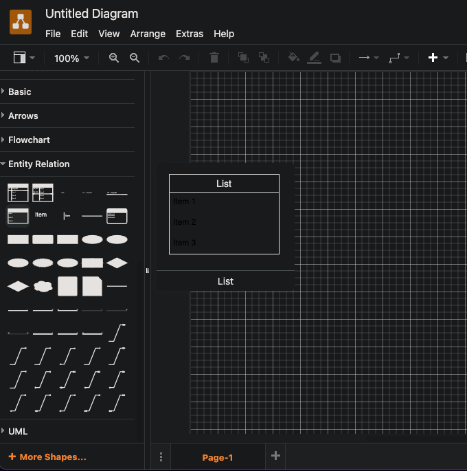
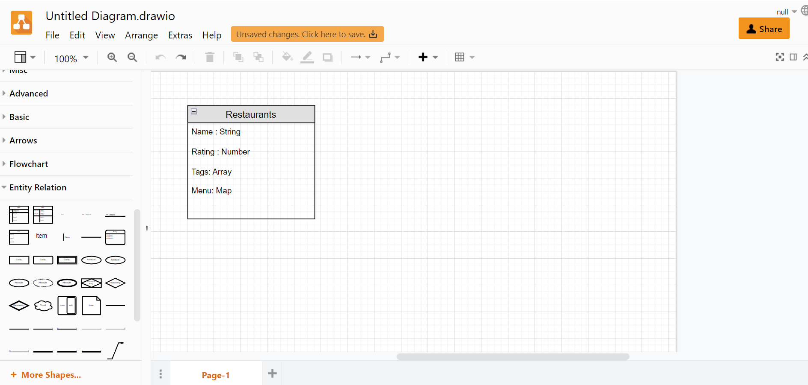
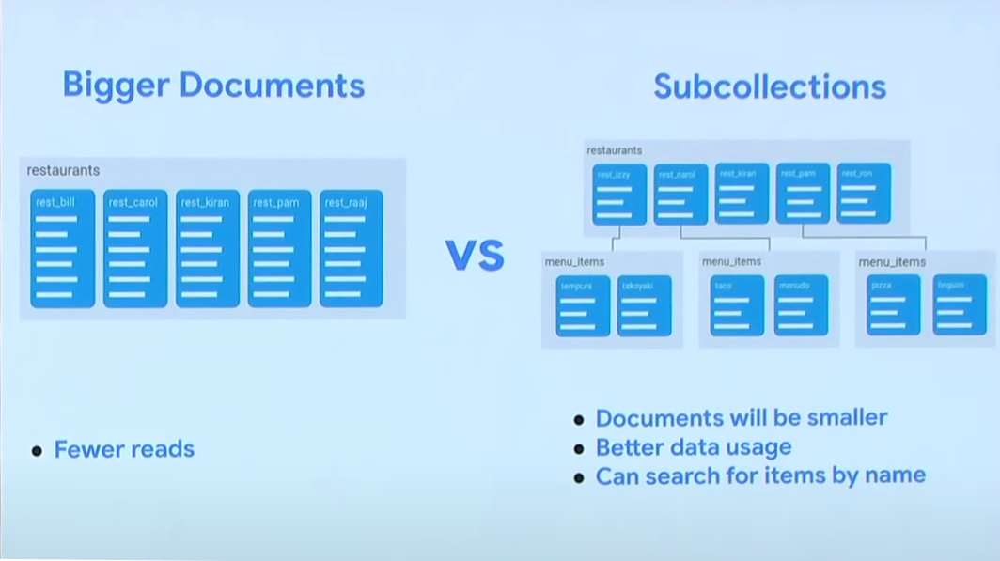
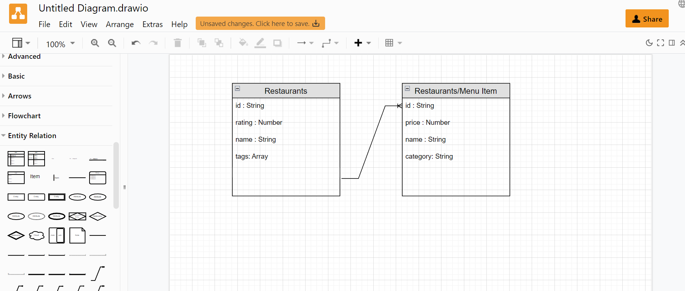
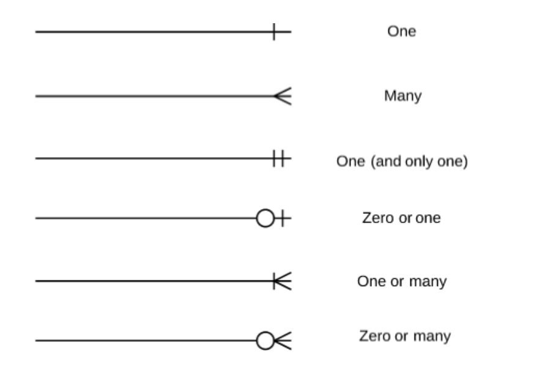
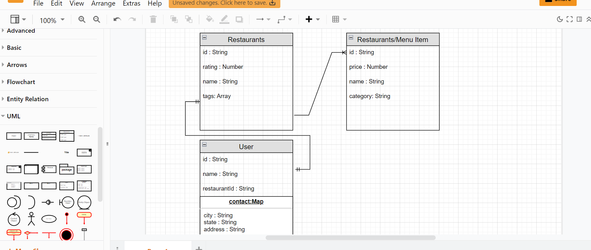

Data Modeling with ER Diagrams
Strong lives are motivated by dynamic purposes. —Kenneth Hildebrand
Overview
At this point we have most of the knowledge needed for creating a CRUD app. Now we're going to learn the process of organizing our data and dive into Entity Relationship Diagrams (ERD).
Why Use Data Modeling?
Data modeling is the process of creating a model that represents the relationships between the different types of data in your database. Even though NoSql is a non-relational database we may sometimes have data that is related. NoSql databases are capable of relational data but, it is not a requirement like it is with SQL databases. A data model emphasizes what data is needed and how it should be organized in a visual manner. In a nutshell, we want to make sure all (or most) of our data objects are accurately represented well before we write any code or build a database! (This will save some headaches down the road.)
One of the most common ways to do this is with the use of an Entity Relationship Diagram, or ERD .
Reason to build and use an ERD:
- Using data models are much easier than changing your real database.
- Planning ahead will help keep your new database from becoming disorganized, or incorrect.
- When creating a database it's easier for you to review a data model than review a a database design.
- In most cases it is harder to describe a database to your someone than simply showing them a model that represents the database.
- These data models help improve organization and communication within your team.
The Setup
We are going to go through the process of creating a data model(ERD) for a Restaurant Ordering App.
- First you need to go to Draw.io.
- Select where you want to save it: GitGub repository, your local hard drive, or any of the others. Select "Decide Later" if you just want to dive right in.
- On the left hand side scroll the menu down to Find the "Entity Relation" tab.
UML Notation
Before continuing know that:
NOTE: Entity Relationship Diagrams are written in UML Notation to visualize the relationships between tables. UML stands for Unified Modeling Language and it is basically the go-to for designing object-oriented systems.
The Process
We will think about our data needs step by step.
- The first functionality we want is for a user to be able to search restaurants and click a button to look at the menu of the restaurant the selected. We will start with a data model that represents a restaurant and keep it in a collection called "restaurant" collection.

- Follow along and do the same as the image below and Model the data for our "restaurant" collection Draw.io for our ERD (Entity Relationship Diagram).
- Select the icon labeled "list" under "Entity Relation". We will represent a "restaurant" collection with several fields a user would expect when searching for a restaurant with their appropriate data types that will correspond with the FireStore database.

- Now think about this from the user's perspective. You only want to send the data that is immediately relevant. Sending extra data can be slow and costly. What data is unneeded for the initial search and would take up to much space? Look at the data in the picture that you put in your ER diagram. Which one of the 4 pieces of data (Name, Rating, Tags, Menu) should be separated out from the search?
Reason for Separation
Receiving the menu data at this point is unneeded since we want the user to click on a button for the menu and at that point we could query the menu items from the database.Put Data in a Sub Collection
It is not always the right way; there are pros and cons, but in general each potential separate user action with our data should be in its own collection. Searching for restaurants and pressing a button to look at the menu are two separate actions and putting the "Menu Item" data in a sub-collection of "Restaurant" makes the most sense for this use case.
When a user clicks the button on the chosen restaurant we can easily return just the restaurant's corresponding "Menu Items" since we already have the reference and id to the document in "Restaurant" collection. This saves us from having to return every menu item from every restaurant returned from a search result. (That would be a lot of data...!)

Here is how we would model it in our ER Diagram. Follow along and make your diagram look the same. Notice We have the label "Restaurants/Menu item" This shows "Menu Item" is a sub collection of Restaurants. Notice that there are several relationship lines to pick from: One-to-One, One-to-Many ect... Zoom in on the picture with your browser Ctrl + + if you're unable to see them clearly.

Also, notice the added id field. Remember each document put in the collection will have a corresponding id that can be setup to be added automatically when FireStore adds a new document. In addition, it is important to note that The id field in FireStore is also a String.
Cardinality
The relationship lines correspond with cardinality. Cardinality refers to the direction that describes the types of relationships that we maintain between our entities. These types of relationships are how we can enforce data integrity throughout our database. For example, each restaurant has many "menu items"(a One-to-Many relationship).
NOTE: Look at the line connecting "Restaurant" and "Menu Items". Trace it from "Restaurant" to "Menu Item and you'll find a single hash line followed by three splayed lined that look like a turkey foot print. This says, "one-to-many". Reverse the direction you traced the line and you'll find the turkey foot print then the single hash line. This says, "many-to-one".
But what cardinality is really talking about is the maximum or minimum number of relationships that can be maintained between two entities. For example, a user can have multiple userContacts but only one usersAddress.
Relationships Explained
-
One-to-One: This relationship can be summed up as one table to another table allowing only one connection each. Such as a User table having a One-to-One relationship for a drivers license table. The user can only have one drivers license so it would be applicable to use the One-to-One relationship.
-
One-to-Many: An example of a One-to-Many relationship would be a Users table and an Orders table. The User can have as many Orders as they want but each Order could only have one User; using a One-to-Many relationship would work perfectly.
-
Many-to-One: this can be understood as the opposite of the previous.
-
Many-to-Many: An example of this would be if the restaurant wanted to allow table reservations where each table could have many bookings throughout the night and each time slot could have many tables reserved.
To practice this Cardinal Lines, find the elements you need under the "Entity Relation" tab on the left toolbar and place them between the two collections.

When a user orders they are going to pick one restaurant to order from on a per transaction basis. So add a user to the data. The user has a One-to-One relationship with a restaurant. Below Under "User" collection the Contact data is The map data type. It is found in FireStore and is what we would call an object in JavaScript. And we would expect to find a object with {state, city, address} ect... You will find it under the "UML" menu tab labeled "object"

We have now modeled our data based for our user interactions. Restaurants will be returned from a search query. When a user clicks a restaurants menu button the corresponding "menu item" sub-collection will be returned. When a user selects a restaurant to order from the restaurant's ID will correspond One-to-One with a user and be saved in the restaurantId field of the "User".
When building your Capstone App or any other in the future, use this tool to help you organize your thoughts and communicated not only to other people but to yourself!
Determining Our Data Model
Most of the information above assumes you already have a working database, or at least a couple tables. We've talked about how to read/interpret our diagrams and in our next class assignment we will work on creating an ER diagram, but let's take a second to talk about modeling the data that these diagrams come from.
NOTE: data modeling is a broad subject. We will discuss only what's most important for us at this level.
Let's now assume that we are starting completely from scratch. We do not have a database set up at this point but we know we are going to use NoSQL. We will want to take the following actions:
-
Understand the company's/app's industry We need to know what we are building. Having an understanding of our business model will help us determine what our entities will be.
-
Identify our entities What collections do we think we will need to create? If I am in the eCommerce space I will probably want a collection called
customers, another calledproducts... and so forth. -
Identify our attributes Now that we have our tables it's time to determine what fields should exist on those tables. Every "customer" should definitely have an
id, but what else? We might want to know the customers'firstandlastnames and probably some contact information:phone,address,email...etc. -
Identify our relationships We have a "customers" table and because we know that customers will place orders, we've also gone ahead and created an
orderscollection. Each table has its own set of attributes but how are they related? What's the cardinality? Well . . . if we assume that any customer can have multiple orders (that would make sense, right?) then we know that we have established a "one-to-many" relationship.
This is the thought process you will go through as you develop NoSQL databases on your own. It may seem simple or it may seem complicated but data modeling is an important part of the development process and a good skill to have. Always begin by drawing it out on paper so you have a good visual understand2
Model Data with a Schema
Schemas are objects that define the structure of the data. We use it in our code to determine how our data is laid out before we enter it into the database. Previously we simply used Object-Literals {}. The disadvantage of this is we have to keep checking back to all the places we have modified the object before inserted it into its collection.
With a schema we can setup a standard process for how all data is structured including safeguards like default values before it gets stored in the DB. We can do this by using JS Classes to construct objects that will then be put into our database. The class would Represent how a piece of data wold look in the collection. Below is an example of a "User" schema.
1 2 3 4 5 6 7 8 9 10 11 12 13 14 15 16 17 18 19 20 21 22 23 24 25 26 27 28 | |
You've seen this in JS211. A Class is a function that constructs an object of same properties (congruent shape) with different values. It does this with the constructor() method that requires this information be passed into the Class before the object can be generated.
Practice It
Prompt 1: You will practice by going back to your FireBase assignments project and changing one of or more of the object literals {} you put in the database with a schema.
- Go to one of the previous 1-4 day assignments(FakeCars) and create a
Models/schema.jsfolder and file. - Inside of the schema file, create a Class that follows your car data collection.
export defaultthe Class. - Then
importand call that Class in the form component to create a new car. -
Replace your Object-Literal with this imported Class before inputting the data like above,
-
Prompt 2: Right now in our Restaurant example we are only saving the
restaurantIdwhen a user picks a restaurant to order from but we are not saving the chosen menu items. You have two choices: make another map object to save the item choices in the "User" collection or make a new "transaction" sub-collection of "User" to save all transaction data and chosen menu items. In your ERD, do one of them and prepare to explain why you did one over the other in class tomorrow.